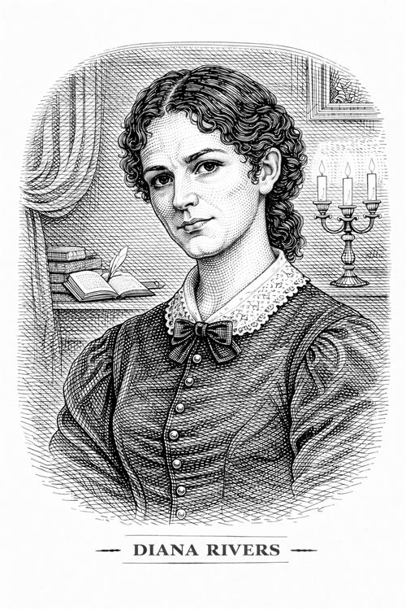

Diana Rivers

Diana es la hermana mayor de la familia Rivers. Tras la muerte de su padre y la pérdida de la fortuna familiar, trabaja como institutriz en una ciudad lejana, pero regresa a Moor House para reunirse con sus hermanos. Representa la culminación del ideal femenino para Jane: una mujer que combina la inteligencia de la Srta. Temple con el afecto de una hermana.
Personalidad e impacto en la vida de Jane
Diana es una mujer culta y cálida. A diferencia de la rigidez de su hermano St. John, Diana posee una naturaleza abierta y compasiva. Comparte con Jane su amor por la lectura y el conocimiento, y la anima a desarrollar su intelecto y su curiosidad. Además, es una mujer compasiva y solidaria, que se preocupa por el bienestar de los demás. Su relación con Jane es de igual a igual, y se convierte en una figura de apoyo y guía para ella.
Junto con su hermana Mary, Diana es quien acoge a Jane cuando esta llega a su puerta moribunda, hambrienta y sin nombre (haciéndose llamar Jane Elliott), tras huir de Thornfield. Nadie las obliga a ser así de bondadosas, lo son por naturaleza.
Diana es la única que entiende por qué Jane no puede casarse con St. John. Ella apoya la independencia de Jane y valida sus sentimientos, protegiéndola indirectamente de la presión asfixiante de su hermano.
Importancia del personaje
Al igual que la señorita Temple, Diana representa la posibilidad de ser algo más que una mujer, en este caso una intelectual, sin dejar de ser afectuosa y solidaria. Representa la independencia lograda a través del intelecto. Al final, Diana se casa con un capitán de la marina, logrando un final feliz que equilibra su intelecto con una vida emocional plena.
A través de ella, Jane experimenta por primera vez una relación de igualdad y sororidad. Es el contraste perfecto a las primas Reed (Eliza y Georgiana): donde aquellas eran egoístas y frías, las Rivers son generosas y brillantes.